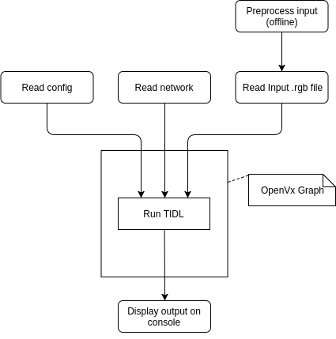
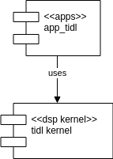
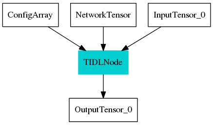

Requirements Addressed
Introduction
Purpose
Sample application to show Deep Learning capabilities of TIDL libarary
Short Application Description
The application performs image classification and object detection using TI Deep Learning libarary. Prerequisites are
- Pre-trained, quantized network which is result of TIDL Graph Import tool
- Resized image in bmp-format which is result of tidl_image_resize.py python script
Input and Output format
- Accepts a pre-trainied network run through TIDL import tool
- Accepts a pre-processed input (raw format)
- For image classification output class is printed on console
- For object detection output image is written
Directory Structure
TIDL application is at below path in vision apps::
├── apps # Applications
│ ├── basic_demos # Application Group
│ │ ├── app_tidl # TIDL application
│ │ │ └── config # Default configuration file
Diagrams
Sequence Diagram

Component Interaction

OpenVX Graph
Below graph is generated after running the TIDL app. Design document is updated after application was tested to include this.

Resource usage
- TIDL node will run on C7x + MMA target
- Image classification output will be printed on OpenVx Host console
Error handling
- Input parameters specified in configuration file are validated by the application. In case of any error application either exits or uses a default
- If input or output files are not present application will exit or continue gracefully, i.e it will not crash and lock up the system
Interface
Following configuration options will be supported in the configuration file::
# location of conifg
tidl_config_file_path <network_path>/config.bin
# location of network
tidl_network_file_path <network_path>/network.bin
# location of input
input_file_path <input_path>/input.bmp
# location of output (for object detection only)
output_file_path <output_path>/output.bmp
# Mode of operation 0: image classification, 1: object detection
operation_mode 0
Design Analysis and Resolution (DAR)
NA
Design Decision : None
NA
Design Criteria: None
NA
Design Alternative: None
NA
Design Alternative: None
NA
Final Decision
NA
 1.8.15
1.8.15